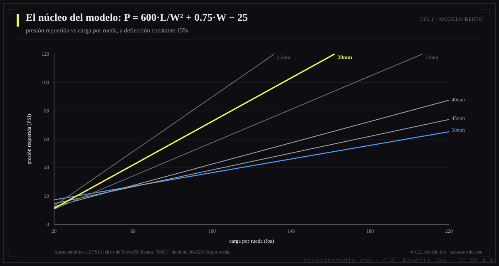
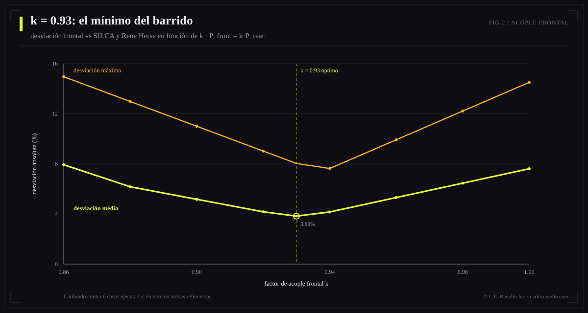
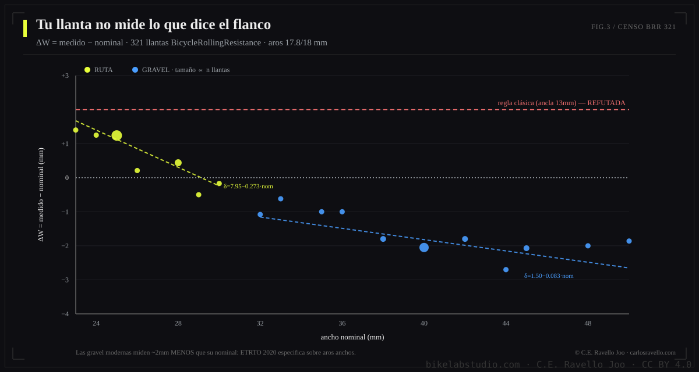
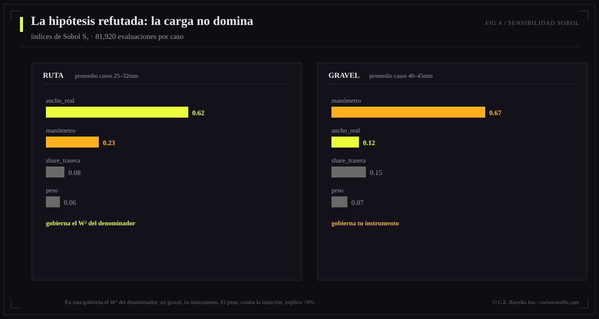
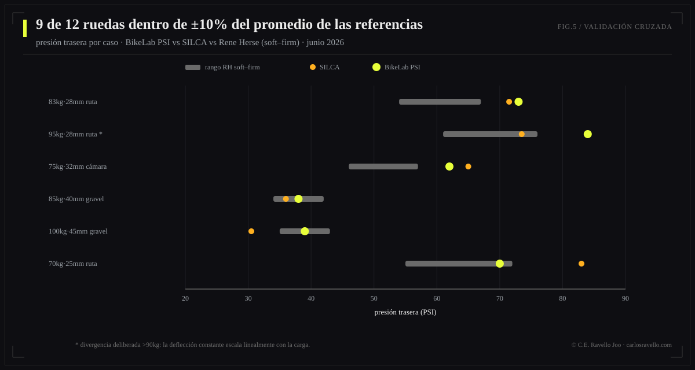

BikeLab Studio — Technical Publications // White Paper
Calibración empírica con censo de 321 llantas, propagación de incertidumbre por Latin Hypercube Sampling y validación cruzada contra SILCA y Rene Herse
Presentamos el modelo físico-estadístico del BikeLab PSI Calculator. El núcleo es el criterio de deflección constante de Frank Berto (15% tire drop), ajustado empíricamente como P = 600·L/W² + 0.75·W − 25 (±2 PSI dentro del dominio medido por Berto: 20–220 lbs por rueda). Sobre ese núcleo introducimos cuatro contribuciones: (1) una corrección de ancho real reanclada mediante regresión sobre 321 pares nominal/medido de BicycleRollingResistance, que demuestra que la regla clásica anclada en aros de 13 mm corrige dos veces lo que el etiquetado moderno (ETRTO 2020) ya incorpora; (2) un acople frontal P_f = 0.93·P_r que sustituye la asignación por carga estática, justificado por transferencia de carga en frenada y calibrado contra SILCA y Rene Herse; (3) propagación de incertidumbre por Latin Hypercube Sampling (N=10.000) que produce bandas de confianza 90% — un dato que ninguna calculadora del mercado publica; y (4) un análisis de sensibilidad global (índices de Sobol, 81.920 evaluaciones por caso) que refuta la hipótesis intuitiva de que la carga domina el resultado: en ruta domina el ancho real (S₁ = 0.51–0.68) y en gravel el error de manómetro (S₁ = 0.61–0.73). La validación cruzada sobre 6 configuraciones arroja 9/12 ruedas dentro de ±10% del promedio de ambas referencias; las 3 desviaciones restantes tienen causa física identificada y se documentan en lugar de ajustarse.
Pregúntele a tres fuentes respetables qué presión debe llevar una llanta de 28 mm con un ciclista de 83 kg y recibirá tres respuestas que difieren entre sí hasta en 20 PSI. No porque alguna esté "mal", sino porque optimizan funciones objetivo distintas y ninguna declara su incertidumbre. SILCA optimiza impedancia sobre datos de atletas profesionales; Rene Herse optimiza confort-velocidad sobre mediciones en ruta real con carcasas supple; las tablas de fabricantes optimizan no ser demandados. El usuario recibe, en todos los casos, un número seco con autoridad implícita y precisión inexistente.
Este trabajo toma la posición contraria: elegimos un criterio físico medible y reproducible (deflección constante), lo declaramos, calibramos sus correcciones con datos públicos verificables, cuantificamos la incertidumbre del resultado y publicamos las divergencias con las referencias del mercado en lugar de esconderlas. El lector no tiene que confiar en nosotros: puede auditar cada constante de este documento.
El chart de Berto admite un ajuste empírico notablemente compacto. Para carga por rueda L (lbs) y ancho real W (mm):
Tres observaciones para el lector que quiere entender, no solo aplicar. Primera: el término dominante es L/W² — la presión necesaria crece linealmente con la carga y cae con el cuadrado del ancho. Esa dependencia cuadrática es la razón física de que el ancho gobierne el análisis de sensibilidad (§8). Segunda: el término +0.75·W corrige la rigidez estructural propia de la carcasa a anchos mayores. Tercera: la constante −25 centra el ajuste; no tiene interpretación física y no debe extrapolarse fuera del dominio.

La aplicación ingenua del modelo asigna a cada rueda su carga estática. Para una geometría racing (40/60), eso produce un frontal ~34% más blando que la trasera. Nuestra validación cruzada inicial mostró que ese frontal diverge de SILCA y Rene Herse entre −24% y −36% — un fallo sistemático, no numérico.
La causa es que la carga estática es la variable equivocada para la rueda delantera. Bajo frenada, la transferencia de masa lleva picos de carga muy superiores al 40% nominal al frontal; un frontal calculado para el 40% estático se deflecta en exceso precisamente en la maniobra donde el manejo es crítico. Las referencias del mercado resuelven esto sin declararlo: SILCA prescribe diferencias frontal/trasera de ~2% y Rene Herse directamente publica un solo valor para ambas ruedas.
Nuestra solución lo declara: la trasera se calcula con Berto puro sobre su carga estática; la frontal se acopla:

La fórmula exige el ancho real montado, no el impreso en el flanco. La regla clásica — el ancho crece ~0.4 mm por mm de ancho interno de aro sobre la base de 13 mm de la era Berto — contiene dos afirmaciones independientes que merecen escrutinio separado: la pendiente (0.4 mm/mm) y el ancla (nominal exacto en aro de 13 mm).
Para auditarlas capturamos el censo completo de BicycleRollingResistance: 159 llantas de ruta medidas en aro de 18.0 mm internos y 162 de gravel en 17.8 mm (321 pares nominal/medido, tests 2014–2026). Resultados:
La corrección reanclada, por regresión lineal sobre el censo:

Si el usuario mide su llanta montada con calibre, esa medición sustituye toda la cadena anterior y la incertidumbre del input cae de σ=1.5 mm a σ=0.5 mm. La corrección existe para quien no mide; el calibre es el bypass.
| Corrección | Valor | Fundamento |
|---|---|---|
| Cámara butyl | +5% | Histéresis de la cámara reduce la deflección efectiva. El valor clásico (+10%) producía desviación +11.9% en validación; +5% es consistente con el tratamiento de SILCA (<10% butyl vs tubeless). |
| Carcasa supple | −5% | Heine: carcasas flexibles deflectan más a igual presión (re-análisis de los datos de Berto). |
| Carcasa rígida/touring | +5% | Simétrico al anterior. |
| Asfalto rugoso | −5% | Pérdidas por impedancia crecen con presión en superficie irregular. |
| Gravel | −12.5% | Punto medio del rango documentado (−10 a −15%). |
Se aplican después de todas las correcciones, sin excepciones: aro hookless 72.5 PSI (5 bar, ETRTO); hookless con ancho interno ≥30 mm, 60 PSI; bajo 25 PSI se advierte riesgo de pinch flat y desllante. La herramienta muestra el valor calculado junto al capeado cuando difieren — el usuario ve la física y ve el límite, y entiende que el límite gana. La regla maestra acompaña todo resultado: nunca exceder el máximo del fabricante de llanta o aro, el menor de los dos.
Cuatro variables inciertas: peso del sistema ~N(μ, 2 kg); ancho real ~N(W, 1.5 mm) — o 0.5 mm con calibre; fracción de carga trasera ~U(±3 pp); error de manómetro ~N(1, 5%) multiplicativo. Muestreo Latin Hypercube (N=10.000 por configuración; converge con ~10× menos muestras que Monte Carlo crudo para percentiles). Sensibilidad por índices de Sobol (esquema Saltelli, base 2¹³ → 81.920 evaluaciones por caso, sin segundo orden).
| Caso | Configuración | Trasera: media [p5–p95] | Banda ±PSI |
|---|---|---|---|
| 1 | 83 kg · 28 mm · ruta · aro 21 | 73 [63–86] | ±11.7 |
| 2 | 95 kg · 28 mm · ruta · aro 21 | 84 [72–100] | ±13.8 |
| 3 | 75 kg · 32 mm · ruta · cámara · aro 19 | 63 [54–73] | ±9.2 |
| 4 | 85 kg · 40 mm · gravel · aro 24 | 38 [35–41] | ±3.2 |
| 5 | 100 kg · 45 mm · gravel · aro 25 | 39 [36–41] | ±2.5 |
| 6 | 70 kg · 25 mm · ruta · aro 21 | 71 [59–85] | ±12.8 |
Las bandas publicadas en la herramienta excluyen el error de manómetro: es incertidumbre del instrumento del usuario, no del modelo. Mezclarlas haría parecer impreciso lo que en realidad es honesto sobre algo que no controla. La advertencia de manómetro se entrega por separado, donde domina (gravel).
La hipótesis de diseño era que la carga por rueda dominaría vía L/W². Es falsa con incertidumbres realistas:
| Caso | S₁ peso | S₁ ancho real | S₁ distribución | S₁ manómetro |
|---|---|---|---|---|
| 1 (ruta 28) | 0.056 | 0.631 | 0.080 | 0.230 |
| 2 (ruta 28) | 0.042 | 0.650 | 0.079 | 0.227 |
| 3 (ruta 32) | 0.084 | 0.512 | 0.098 | 0.304 |
| 4 (gravel 40) | 0.084 | 0.159 | 0.150 | 0.605 |
| 5 (gravel 45) | 0.058 | 0.073 | 0.143 | 0.726 |
| 6 (ruta 25) | 0.066 | 0.684 | 0.067 | 0.180 |

El mecanismo es aritmético una vez que se ve: ±1.5 mm sobre un ancho de ~30 mm es ±5% que entra al cuadrado; ±2 kg sobre 83 kg es ±2.4% lineal. S₁ ≈ S_T en todos los casos: el modelo es aditivo a estas escalas, sin interacciones relevantes. Consecuencias de diseño: el ancho se pide con resolución de 1 mm y se ofrece el campo de calibre; el peso y la geometría pueden ser inputs gruesos sin pérdida; en gravel la herramienta advierte que el manómetro del usuario importa más que el modelo.
Seis configuraciones ejecutadas en vivo (junio 2026) en las calculadoras de SILCA y Rene Herse, documentando cada parámetro extra y su mapeo. Criterio: desviación ≤10% respecto al promedio de ambas referencias en ruta; tolerancia ampliada en gravel, donde las propias referencias divergen entre sí hasta 30%. Resultado: 9/12 ruedas dentro de criterio.
| Caso | BLS F/R | SILCA F/R | RH soft–firm | Desv. R vs promedio |
|---|---|---|---|---|
| 1 | 68 / 73 | 70 / 71.5 | 54–67 | +10.2%* |
| 2 | 78 / 84 | 71.5 / 73.5 | 61–76 | +17.9%† |
| 3 | 58 / 62 | 63.5 / 65 | 46–57 | +7.0% |
| 4 | 35 / 38 | 34.5 / 36 | 34–42 | +2.8% |
| 5 | 36 / 39 | 29.5 / 30.5 | 35–43 | +16.7%‡ |
| 6 | 65 / 70 | 80.5 / 83 | 55–72 | −2.6% |
* Artefacto de redondeo: las referencias solo aceptan anchos enteros; el modelo trabaja en décimas. † Escalado con peso, §9.1. ‡ Gravel: SILCA y RH divergen 30% entre sí en este caso; quedamos entre ambas.

Para riders >90 kg esta calculadora recomienda presiones más firmes que SILCA. No es un error: el criterio de deflección constante (15% drop) exige que la presión escale linealmente con la carga — un rider más pesado deflecta más la llanta a la misma presión. Las calculadoras que optimizan impedancia saturan con el peso; las que optimizan deflección, no. Elegimos deflección porque es el criterio medible y reproducible. Estamos además dentro del dominio empírico de Berto (midió hasta 220 lbs por rueda: el caso 2 carga 125 lbs en la trasera). En la práctica, el techo hookless de 72.5 PSI comprime esta divergencia en la mayoría de ruedas modernas.
Berto declara explícitamente que el criterio 15% no es válido para MTB: los aros son proporcionalmente más angostos, los tacos distorsionan la medición de deflección, y el objetivo off-road es tracción y absorción, no resistencia a la rodadura. Antes que extrapolar un modelo fuera de su dominio de validez — el pecado capital de la ingeniería aplicada — lo declaramos: el módulo MTB se desarrollará aparte, sobre heurísticas de fabricantes, y la interfaz ya reserva su lugar.
Este trabajo aplica el Modelo de Coherencia Dinámica (MCD) de Carlos Eduardo Ravello Joo: separar explícitamente lo que el sistema revela (el modelo, sus constantes, su validación — auditables) de lo que administra como no resuelto (la incertidumbre cuantificada, las divergencias documentadas, los límites declarados). La banda ±PSI y la sección 9.1 no son concesiones: son el producto. La coherencia entre lo que la herramienta dice, lo que hace y cómo lo muestra es el criterio rector de diseño.